|
|
| red seaweeds text index | photo index |
| Seaweeds > Division Rhodophyta |
| Holey
sponge seaweed Ceratodictyon spongiosum* Family Lomentariaceae updated Oct 2016 Where seen? This woolly branching organism is sometimes seen on our Southern shores, growing on coral rubble. It looks like a sponge, complete with holes along the 'stems'. It can form large tangles, and even clusters that stand upright even out of water. Features: The entire organism can be about 20-30cm across, with 'stems' about 1-1.5cm wide. The 'stems' solid often dividing frequently to form large spreading mats. Tips usually y-shaped. Each 'stem' is made up of fine, branched filaments that are packed together to form structures that feel woolly, velvety, spongey or felt-like. There are tiny holes along the 'stems'. Light to dark green. This organism is actually a symbiotic combination of an algae (Ceratodictyon spongiosum) and a sponge (Haliclona cymaeformis Family Chalinidae, indicated as Sigmadocia symbiotica in AlgaeBase). The algae makes up the bulk of the organism while the sponge provides the tough exterior and appears to give the organism its shape and form, contributing to the formation of the tiny holes. The algae gets most of the nitrogen it needs from the sponge. Sometimes confused with the Smooth sponge green seaweed (Cladophoropsis vaucheriaeformis) which looks very similar, its holes along the 'stems' are not obvious when out of water. This is a green seaweed which also has a symbiotic relationship with another kind of sponge. The two organisms are sometimes difficult to tell apart in the field. |
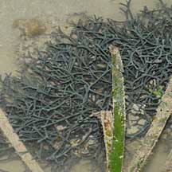 Pulau Hantu, Jun 10 |
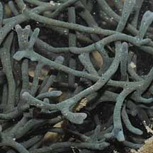 |
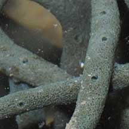 |
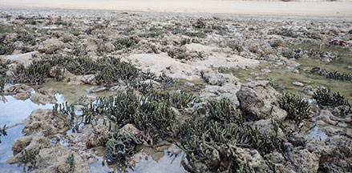 Big Sisters Island, Aug 25 |
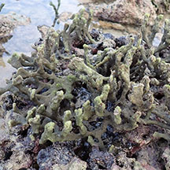 |
|
Pulau Hantu, Jun 10 |
|
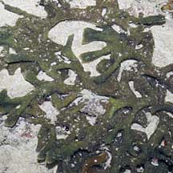 Pulau Senang, Aug 10 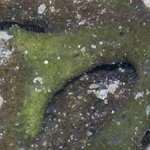 |
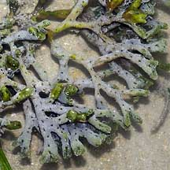 Pulau Semakau, Mar 05 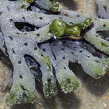 |
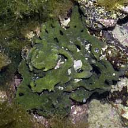 Sentosa, Feb 08 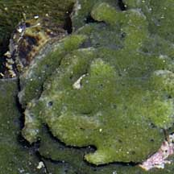 |
*Species are difficult to positively identify without close examination of internal parts.
On this website, they are grouped by external features for convenience of display.
| Holey sponge seaweeds on Singapore shores |
On wildsingapore
flickr
|
| Ceratodictyon
recorded for Singapore Pham, M. N., H. T. W. Tan, S. Mitrovic & H. H. T. Yeo, 2011. A Checklist of the Algae of Singapore.
|
Links
|